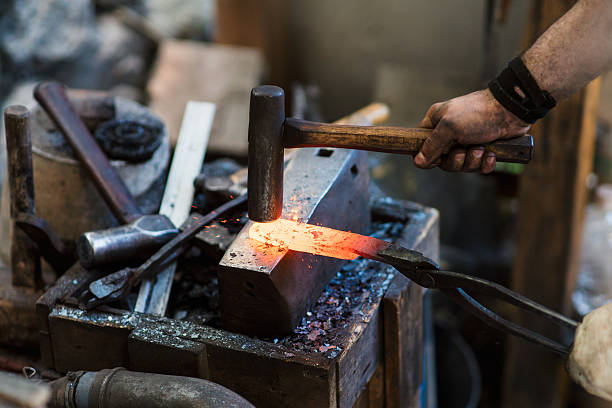
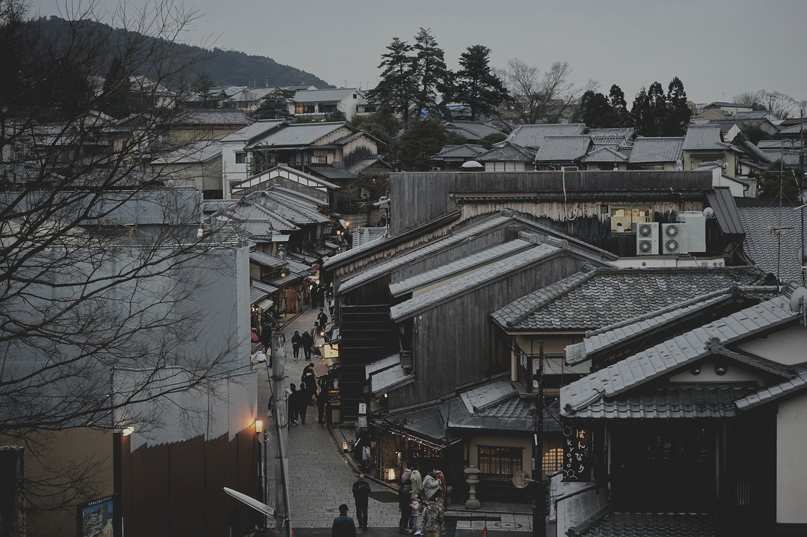
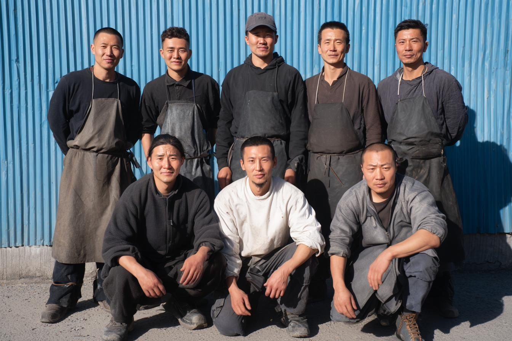

Material
Visible process, tangible detail.
Warm forge imagery gives the website a stronger sense of origin, making the craft theme feel real and grounded.
International Trade / Handicraft Display
A professional showcase for international trade, handmade craft culture, and business-facing product presentation.
Craft Focus
Warm forge imagery gives the website a stronger sense of origin, making the craft theme feel real and grounded.

The page uses workshop and hand-finishing imagery to support a more professional product-display impression.
Display System
Business activities related to cross-border trade, product presentation, and cooperation communication.
Focused on handmade craft presentation, visual order, and client-facing display value.

Heritage & Market
The site combines traditional craft atmosphere with a clean commercial structure, suitable for public display, partner communication, and simple verification use.
Business Scope
Cross-border trade presentation and practical business communication.
Curated display content centered on handmade products and craft value.
A public-facing website structure for sharing with customers and partners.
Workshop Impression
The selected imagery gives the website more depth, moving it from a simple text page into a stronger commercial display experience.
